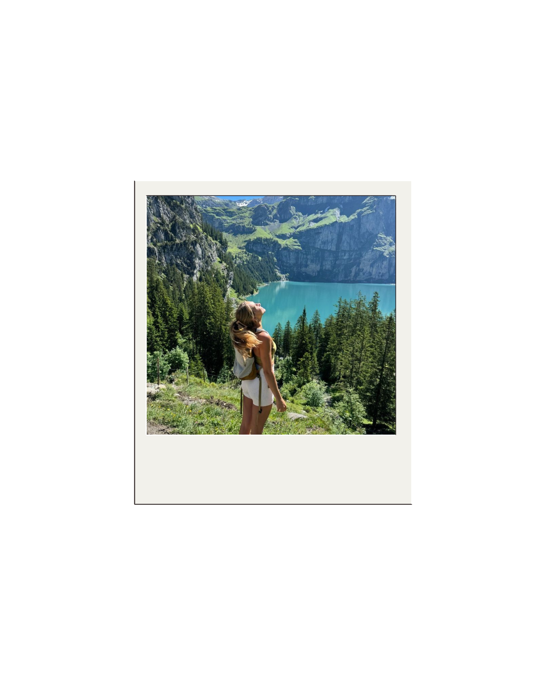
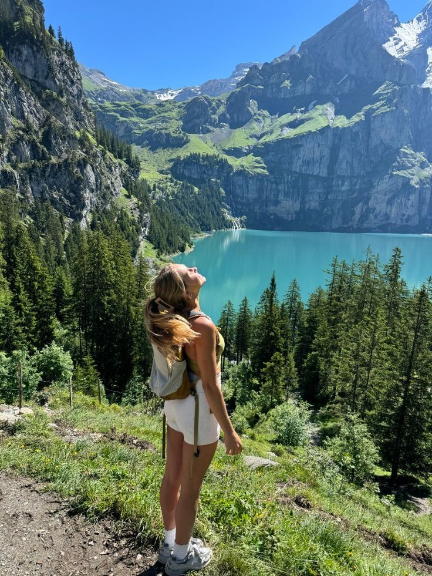
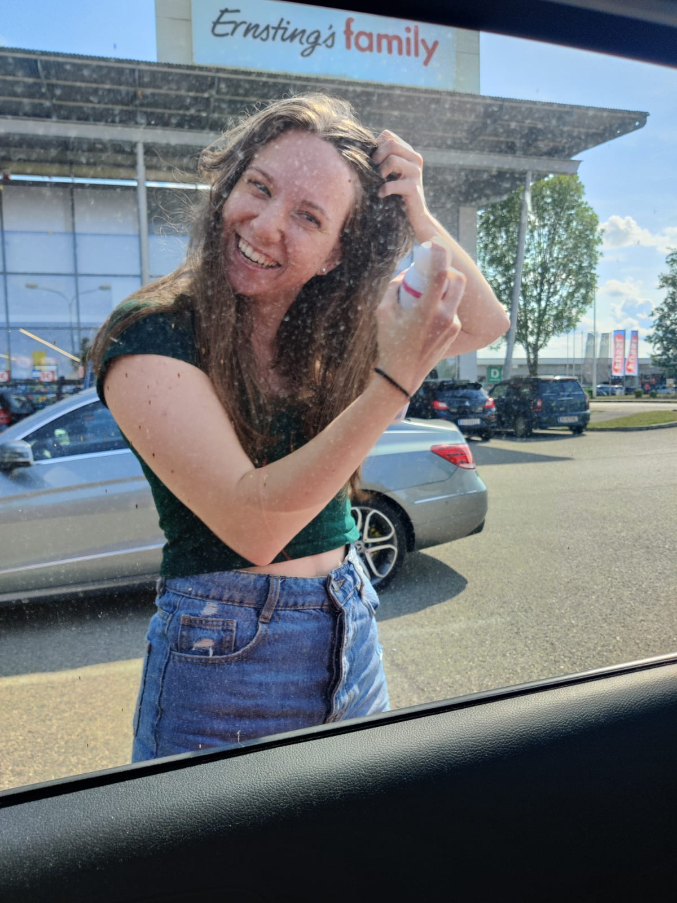

outside & free
Dec 2024
 cold mornings & open fields 🐎
Journal öffnen ↗
cold mornings & open fields 🐎
Journal öffnen ↗
cold mornings & open fields 🐎
Journal öffnen ↗
Aug 2024
whale shark dreams 🌊
the most magical thing
I've ever seen in my life 🌊
Sep 2024

wandern & ausatmen 🌿 Journal öffnen ↗
Aug 2024
somewhere far away
I could stare at this
forever.
Apr 2025

legs tired, heart full 🌿 öffnen ↗
Apr 2025
noticing things
öffnen ↗
Jul 2024
 summer lake ☀️
summer lake ☀️
summer lake ☀️
that one perfect
summer afternoon ☀️
cozy moments
Oct 2024
 sunset in a cup ☕
sunset in a cup ☕
sunset in a cup ☕
still warm when
everything else felt cold ☕
Nov 2024
 warmest socks in existence 🧦
warmest socks in existence 🧦
warmest socks in existence 🧦
the only acceptable
winter fit 🧦
 indigo soup & quiet evenings 🍲 · Journal öffnen ↗
indigo soup & quiet evenings 🍲 · Journal öffnen ↗
Jan 2025
winter mood ❄️
winter mode:
fully activated ❄️
Nov 2024
 pasta & peace 🍝
pasta & peace 🍝
pasta & peace 🍝
pasta solves everything.
I stand by this. 🍝
little things
Mar 2025
 🤍
Journal öffnen ↗
🤍
Journal öffnen ↗
🤍
Journal öffnen ↗
Mar 2025

little ritualslittle rituals that make
a tuesday feel okay
Feb 2025
 back in the saddle
Journal öffnen ↗
back in the saddle
Journal öffnen ↗
back in the saddle
Journal öffnen ↗
 just a moment 🌸
just a moment 🌸